TuongThanhGioc/BaRia,VungTau
大キリスト像/ブンタウ
ホーチミンの東にブンタウという半島状の街がある。
ここは今流行りのこじゃれた「ベトナムのビーチリゾート！」などというところとは無縁のひなびた海水浴場の風情である。
で、その半島の先っぽ付近に街のシンボルともいえる大キリスト像が高台の上に建っている。
大観音マニアとしては押さえておきたい物件である。
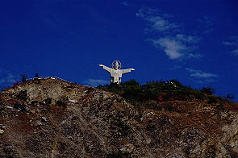
さてここでベトナムキリスト教事情について少し触れておく。
この国でキリスト教といえばほとんどカトリックの事で人口比では全人口の10パーセントとフィリピンに次いでアジア第二のカトリック国である。キリスト教も結構盛んなお土地柄なのだ。
その中でホーチミン市とここブンタウのあるバリア省に挟まれたドンナイ省はベトナム南部カトリックの牙城で、ホーチミンからブンタウまでの道中にも数多くの大教会をみかけた。また、小さな教会などにはやけにオリエンタルなデザインのマリア像が庭に飾られており、一方仏教寺院にもやけに西洋風な観音像がまつられたりしていて、しかも建物がお寺は教会風、教会はお寺風だったりしてどっちの建物も似たり寄ったりだったりするのでかなり紛らわしいのである。
1971年に開眼、じゃなくて完成したこのキリスト像、高さは約30メートル。
いい大きさである。胎内巡りに期待が持てるサイズである。
数々の胎内巡りを体験して来た私だがキリストさんは初めてなので一寸緊張気味。
ちなみに大「大司教」像の胎内巡りはイタリアで経験済み。
もしかしてキリストさんの中には奉納千躰キリスト像とかカトリック版地獄天国巡りとかあるんだろうか・・・
などとキリストサイドとしては迷惑とも思える期待を胸中に秘めつつ山の入口に立つ。
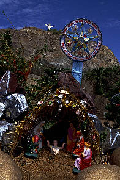
コレなんて言うんですか、暮れになると日本の教会の前などでもたまに見かけるクリスマスの飾り付け、キリスト生誕のジオラマ仕立ての。
ベトナムの教会でも良く見かけたが何故か派手、そしてディープ。
山の上にはキリスト像が私のお越しを待ち構えている。
さあ、登るぞ！待ってろよキリストさん！
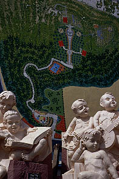
・・・と思ったら、私の登攀能力を半減させるような脱力系の小僧どもが座っている。
現在地は後ろの案内地図の一番下の方。キリスト像までは長い道のりだ。
〜かなり真剣に登攀中につきしばし中略〜
海を背にオッチラオッチラ坂道を登る事十数分。キリスト像の足下に着いた時は汗まみれ。でも海からの風が心地よい。
っていうか海、大荒れ。ひそかに狙っていた海水浴は出来そうにない。
見上げればそこにはキリスト像の姿が。
両手を水平に大きく広げて腕の運動〜♪イチニッサンシ、ニーニッサンシ♪って感じです。
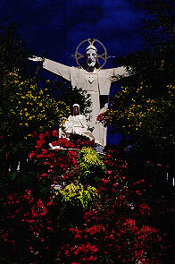 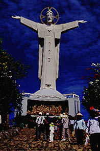
それにしてもこのキリスト像、やけにカクカクしてないか？特に袖の下とか。
そういえばキリスト像の前にあるマリア像もやけにカクカクしてました。
恐らくこれは技術的な問題だと思うが、このカクカク感が返ってこのキリスト像が建築物みたいな彫刻みたいなどっち付かずの微妙〜に半端なグルーヴを醸し出していて中々イイ感じである。合体ロボっぽいし。
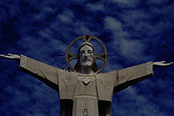
右肩の上に人がいるのが見えるだろうか。あそこまで登れるようだ。よし、行こう。
台座の裏に入口はある。
中に入ると土産物屋がありキリスト像などが売られているがここのレプリカはなかった。
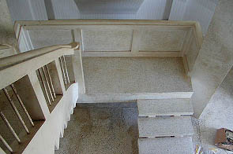 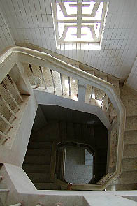
階段を登って2階に行く。ガラーンとした部屋の真ん中に階段がある。上を見上げれば螺旋階段が延々と続いている。
残念ながら胎内のアトラクションは特にない。便所のようなタイル張りの壁だ。所々に窓がある。「本」の字を上下にくっつけたような窓枠がオシャレだ。
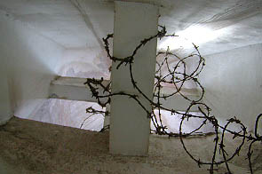
最上階に到着。丁度肩と肩の間辺り。上を見上げれば顔の部分に外の明かりが射している。
外からは判らなかったが顔のどこかの部分が採光のために開いているのだろう。
有刺鉄線が巻いてあるということは誰かがよじ登ったりしたのだろうか？登りたい気持ちは判るぞ〜。
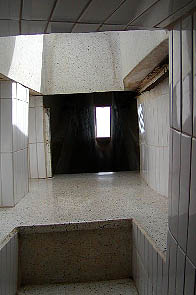 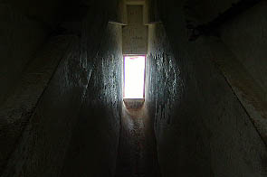
左右には腕の部分がある。肘の関節辺りまではタイルが貼られている。ここまでは来ていいよ、という事なのだろう。
しかしその先の袖の下の部分まで行っていけない事も無さそうな感じ。しかし狭いし床が汚れてるし（胎内は土足厳禁）かなり危険な事態も予想されるので行きませんでした。でも凄く気になるスペースだった。
で、左肩部分に行ってみる。頭を出してみると。
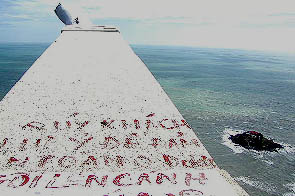
いえーい。絶景かな絶景かな。
腕の上部には何やら文章が書かれている。何と書かれているかは不明。もしかしたら「ココに登ってはいけません」とでも書いてあるのだろうか。
腕の先には手が見える。眼下には荒れた海。
良い眺めだ。ただし風は凄いけど。
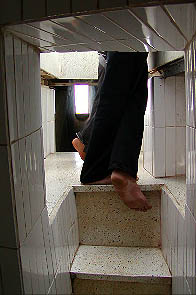
右肩部分には先客のベトナム男子二人組がいてブンタウの街を見下ろしながら何やら口論をしているようだ。
一寸ゴメンなさいよ、ってな雰囲気でもなかったのでしばらく待っていた。
待つ事数分、やっと男子二人組が下りて来た。お、二人ともにこやかな表情。何があったか知らないが良かったね。
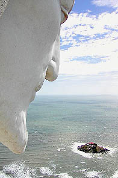 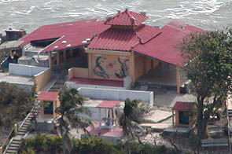
で、男子二人組と入れ代わり右肩展望台へ。
キリストさんのドアップと海に浮かぶ小島の図。
決してしゃくれアゴなわけじゃなくてヒゲである。
島には寺があって潮が引くと地続きになり歩いていけるらしい。何だか江ノ島みたいなところだなあ。
そういえば1971年といえば思いっきりベトナム戦争の真っ最中じゃあないですか。
世界平和祈念、とかいって建てたんでしょうか。戦時中だっていうのに。
裏手にはかつて動物を飼っていたであろう檻がほとんど物置きと化していました。
一寸寂し気〜
次へいきましょう
越南珍寺劇場
珍寺大道場 HOME